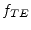

The characteristic impedance of a coaxial line can be calculated as follows:
| (13.1) |
Overall losses in a coaxial cable consist of dielectric and conductor losses. The dielectric losses compute as follows:
| (13.2) |
The conductor (i.e. ohmic) losses are specified by
| (13.3) |
with  denoting the sheet resistance of the conductor material,
i.e. the skin resistance
denoting the sheet resistance of the conductor material,
i.e. the skin resistance
| (13.4) |
In normal operation a signal wave passes through the coaxial line as a TEM wave with no electrical or magnetic field component in the direction of propagation. Beyond a certain cutoff frequency additional (unwanted) higher order modes are excited.
|  | (13.5) | |
| (13.6) |